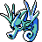
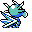

#117
Seadra
Water
Capable of swim- ming backwards by rapidly flapping its wing-like pectoral fins and stout tail
Base stats Total 395
HP55
Attack65
Defense95
Speed85
Special95
Evolution
Pokédex data
- Species
- Dragon Pokémon
- Height
- 3'11"
- Weight
- 55.0 lb
- Catch rate
- 75 / 255
- Base experience
- 155
- Growth rate
- Medium Fast
Level-up moves 10
LevelMoveTypePowerAcc.PP
TM / HM moves 15
TM / HMMoveTypePowerAcc.PP